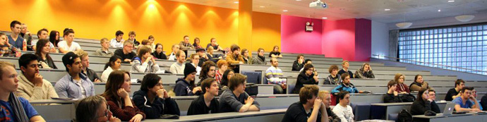

PICKING A WINNER AT NITH
On the 15th of May we will pick the nordic winner of Dare to be Digital at NITH. Five student teams from Norway, Denmark and Sweden, will compete for the opportunity to spend two months in Scotland with the opportunity to work on their own game. The Scottish government sponsors pay, accommodation and travel to the international student competition "Dare to be Digital" to the winning team.
There will be held a semi-finale in Scandinavia, with NITH as partner for Dare to be Digital. A judging panel consisting of game developers from EA DICE (Sweden), IO Interactive (Denmark) and Norwegian Funcom has already made an online assessment of submissions from Scandinavian colleges and universities, and picked out the five best entries. These come from the University of Skövde (Sweden), IT University of Copenhagen (Denmark), University College of Hedmark and Nith.
Similarly finals will be held in the UK, India and China. The finals will be held at Abertay University in Dundee, Scotland from June to August. Here, a total of 14 teams develop their game from design to playable version for 10 weeks, with access to the necessary hardware and software, and mentors from game companies like Sony, Rockstar North, Sega, Ubisoft and the BBC.
- For the students who go to this final, there will be a unique opportunity to gain experience in game production, linking networks with international resources and be challenged by the best game production students in the world, says head of game production at Nith, Eivind Brevik. Last year a team from NITH qualified for the final and got a lot of praise for the game Break a leg.
The Scandinavian semifinal held at NITH in Oslo Wednesday May 15th. The five teams will then present their game idea for the judges, based on the feedback they received after the first round. The winner will be announced the same day at 13.30, and will thus be able to look forward to a summer vacation with paid games production.
How to get to NITH:
NITH is located in Oslo at Oslo Central Station, specifically in the gallery. The gallery is the long building that is above Bus Terminal, which stretches from Plaza Hotel Oslo to Grønland. You'll get to NITH in a few minutes, whether you are driving the bus, train, tram or metro. The nearest stops named Grønland / Grønlandsleiret or Bussterminalen, wheter it's by bus, metro or tram.